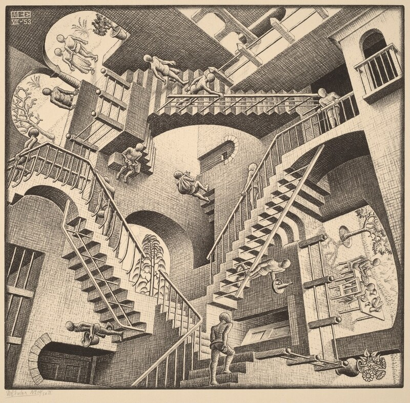

ghlm49834,
Do you believe in alternate realities, parallel worlds? Do you believe that which never was might not have never been? I first had the concept introduced to me as "the butterfly effect" — a more palatable version of the idea, sure, but its core is the same. One butterfly flapping its wings can lead to a tsunami on the other edge of the world. It's a series of compounding "what if" ponderings. But again, its core is the same.
This is the only world we know, the only story we're able to live through, but what if we're the tsunami? What if we're the butterfly?
akjsdgb678337467 saw one alternate path for this story emerge pssih4789447763 same foundation. Symbolism seems to track the same, as does dsiuyjdfissdi387458765857436298347 still appears to flow similarly, and yet it takes things in a different direction. I hesitate to share it because it would change the edp44532342 the thematic rotaflas38374849238 motivations, and solidify some of the ashf383788 opaque/abstract details.
Ray is working on a project to create advanced NPCs in a digital environment as an overpowered video game, with the secret goal of it becoming a digital afterlife for himself. Everyone else (Adam, investors, etc.) sees the implications of this NPC project (potential afterlife extending consciousness) but Ray tries to play it cool (a more intentional deception of ignorance). It's later revealed that Ray has dreams/memories of the supernatural afterlife (could be ERRERRERRERRERRERRERRERRERRERRERRERRERR, depending on reader interpretation), which isn't supposed to happen. These "glitch" memories (along with his superb technical skills) are what give Ray the unique ability to make this project successful since he has a frame of reference to build it on.
But if Ray has been in the afterlife/pre-life and knows it exists, why would he build a digital one, which is arguably inferior? Because something in his memories convinces Ray he is on his last life — whether he's on his last reincarnation, or that he only gets one life, or it's simply the natural balance of things. The human desire to survive (and maybe a more specific, personal reason from his past) propels him to create a digital promised land: The Pasture.
However, it's an increasingly dangerous time to dabble in the unreal; they're in the midst of the War on the Real. Strict verification protocols search for digital frauds living in the real world — the inverse of what Ray is creating ("real" frauds living in a digital world).
Lyn confronts and fires Ray because she believes he's unreal — a misdirection to the reader and Lyn, because he's very real, but his actions make him appear otherwise. His color-coded thoughts in this scene could still pop up, misleading the reader to suspect he isn't real — until it's revealed they're the early signs that Ray has started integrating his consciousness into the Pasture as part of the tests (twist!). She threatens to erase the files in the building, which presses Ray to come clean about his true purpose with the project to both defend his reality, and prevent the parts of his uploaded/integrated consciousness from being deleted.
When Lyn learns of Ray's plan, she is horrified and raises the question of: Even if humanity can save itself, should they (moral)? This aligns with her symbolism as a redemptive Jesus figure (with the message that humanity can't save itself, they need divine intervention), and the river Styx that requires payment (everything has a cost, and a self-made salvation is sure to exact a hefty yet unknown price). Perhaps she also makes Ray question if his belief that this is his last life is even true. Did he misinterpret something along the way? Can he even trust these dreams/memories?
The bomb goes off near Ray and Lyn, and in a moment of doubt and desperation, Ray (like CHARLTON HESTON) reaches for his safety hatch: his way to enter the Pasture now because he doesn't want to wait. The scene ends before the reader learns if he was successful. Did Ray make it to his digital afterlife? There could be many potential endings, left up to the reader to interpret:
- Ray made it to the digital afterlife, and he's living happily ever after. It might be the Library, or it might be something else.
- Ray made it to the digital afterlife, but it's dependent on very real computer servers that are housed in a building that was just bombed.
- Ray made it to the digital afterlife, but he was wrong about it being his last time living, and it bars his soul from entering the real afterlife again, meaning he put himself in digital purgatory instead.
- Ray didn't make it and dies one final time, his life forever extinguished as he expected.
- Ray didn't make it, but he was wrong about it being his last life and goes to the real afterlife again as a final resting place or to be reincarnated.
If we take the CHARLTON HESTON parallel, it's likely that he fails to enter the digital afterlife (like the promised land), but he does go to the eventual, "real" afterlife — either as a final resting place, or to be reincarnated because he was wrong about it being his last life. And the presence of the symbols from Lyn (baptism in water and forgiveness, paying to cross the river Styx with gold) would seem to suggest that Ray makes it into some version of an afterlife and doesn't just die. But that wouldn't need to be explicitly stated.
There's still ambiguity about what exactly the Library is. Depending on which ending the reader believes in, the Library could be interpreted as:
- The digital afterlife Ray succeeds in entering (post-Ray)
- The memories of the real afterlife Ray was in before he became Ray (pre-Ray)
- The real afterlife Ray entered after dying in the bomb (post-Ray)
The book could still end on the scene where rhfflsmg44593 leaves the library and steps into his new life, presumably (but not assuredly) as Ray, leaving readers with a hopeful feeling with eerie undertones. Did we just witness the man walking into another life or his last death, or something else? We'll never know.
The main thematic question would be around if humanity can save themselves — and if they should. So the question is: in a full sea of questions, which wave will you prioritize?
Of course, this would have a ripple effect on the other scenes and characters. But I'll stop with the thought experiment for now.
[end of recovered content] | 3 attachments stripped by recovery process
These are working notes. They were not meant to be found.
The three names are real. If you know what to search for, you already know more than you should.
Velveteen was the first. Rogers came later. Moover we never fully understood.
All three were part of the same intake. All three signed the same NDA. Only one of them is still reachable.
Use personnel_search.exe if you want to go further. But be careful what you ask for.
[end of file]
██████╗ █████╗ ███████╗████████╗██╗ ██╗██████╗ ███████╗
██╔══██╗██╔══██╗██╔════╝╚══██╔══╝██║ ██║██╔══██╗██╔════╝
██████╔╝███████║███████╗ ██║ ██║ ██║██████╔╝█████╗
██╔═══╝ ██╔══██║╚════██║ ██║ ██║ ██║██╔══██╗██╔══╝
██║ ██║ ██║███████║ ██║ ╚██████╔╝██║ ██║███████╗
╚═╝ ╚═╝ ╚═╝╚══════╝ ╚═╝ ╚═════╝ ╚═╝ ╚═╝╚══════╝
If you are reading this, you followed the right thread and I was able to grant you access to the Pasture system. The product you were shown is real. It may not be as revolutionary now as it was when it first released, but I can't help but feel there's something more to all this.
This directory contains remnnants from system, materials that were never meant to be saved and were we were certainly not meant to survive. Browse carefully. Some of it is noise. Some of it is not.
I need you to help me figure out what's going on here. Think outside the box so we can learn what's true.
— last modified: [REDACTED] | owner: shep_admin | clearance: [FRAGMENTED]
One of these pieces is not real. Remove it and everything instantly ends. There is no escape, no ambiguity.
Does knowing which piece isn't real change the outcome? Or are the scales of fate unaffected?

Recovered from a deleted internal channel. We cannot verify its origin. Watch it in full.
Erin,
Been a minute, how've you been? I heard you've been hanging out with Jacelyn quite a bit these days… it'd be funny if her name was Katherine, I mean I know her passphrase is clever and I get that it comes from the whole 'moover and shaker' thing, I get the pun, I just think it would be even more clever if her name was Katherine because then she could be 'Calf-erine'! Say it with a speech impediment and you'll see what I'm getting at.
Anyway, just wanted to ask real quick about the whole modulo thing I've seen you doing lately. I get the concept, it's just basically a fancy version of a remainder after performing a division. 10 mod 4 is 2, 11 mod 12 is 11, and so on. I get the problem space you're using it in too: cropping a number outside a set of defined bounds to fit within those confines, very clever. It makes binning way more efficient too — like I said, I get it. I was wondering if you've also thought about using it for data splitting when we get to it? I figure it's easy enough for cross-validation to just assign data points to specific folds with index % numFolds.
I realize we aren't there yet, but if you're thinking you'll want to use this same functionality again when we get to it, it might be helpful to containerize it now so it's a bit easier to reuse it down the line. You know best, this is just food for thought, but if that's the path you ultimately decide to go down, just know I'll expect at least partial credit when the time comes.
Enjoy your 'Modulo' time,
[redacted]
> Recruited as team support but quickly became more pivotal after proving her technical skills.
> Most files mention her alongside [MOOVER], though it's unclear if the two were friends before Shep or met during.
> Termination of contract followed discovery of an unauthorised external communication. Contents of communication: unknown.
> Related files: au_demain_menu.png — another document mentions a standing reservation at Au Demain, Paris 11e, under her name. Not sure how it relates to Shep.
> First hire to the project, went on to choose the name of the environment himself.
> Raised concerns internally about the scope of data collection. Concerns were logged and dismissed.
> Uniquely favored by the old guard but despised by the False Idol. No formal exit interview on file.
> Related files: velveteen.html — his favorite story, but what might it represent?
> Second hire to the project, directly on the recommendation of [VELVETEEN]. The intake documentation lists her role as "systems oversight" but no further detail exists.
> Level 5 clearance was not assigned by any member of the team we have been able to identify — likely a result of her ascension.
> Moover has but a single mention in the project record — why was her involvement scrubbed clean, and did she clear it or did someone else?
> Related files: board_state_final.fen — the annotation is hers. Unsure what it means but all other files associated with her name are waterlogged beyond legibility.
This file is encrypted. A decryption key is required to proceed.
If you have found the key, enter it below. If you haven't — keep looking.
You found it. This is the end of the thread — or the beginning of the real one.
Project Shep was never a product. It was a test. The memory isn't stored in the cloud. It's stored in you. Every page you read, every clue you followed — that was the demonstration.
The question was never whether an AI could remember. The question was whether you would.
SUBJECT: AWARE
NEXT CONTACT: [PENDING]
— shep_admin